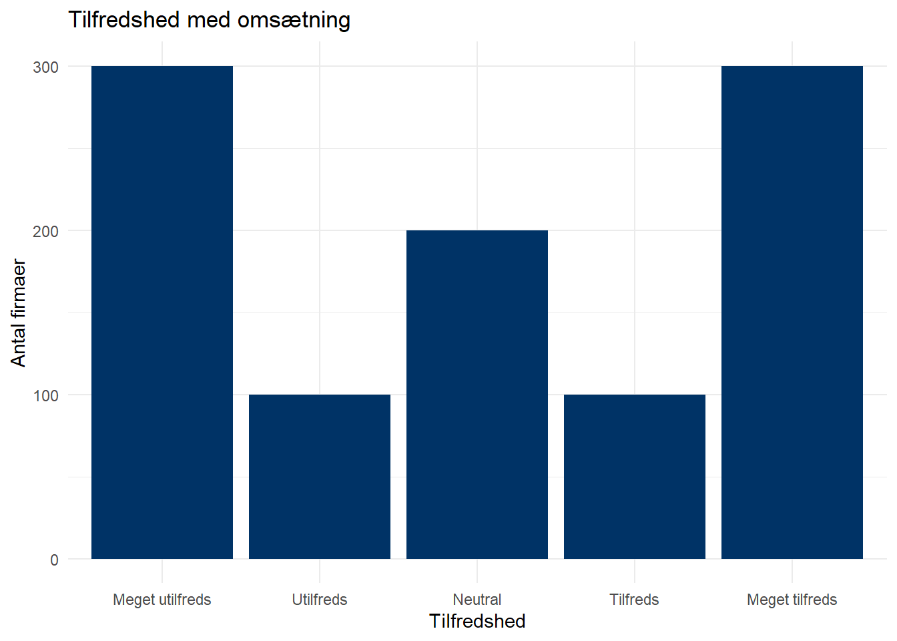
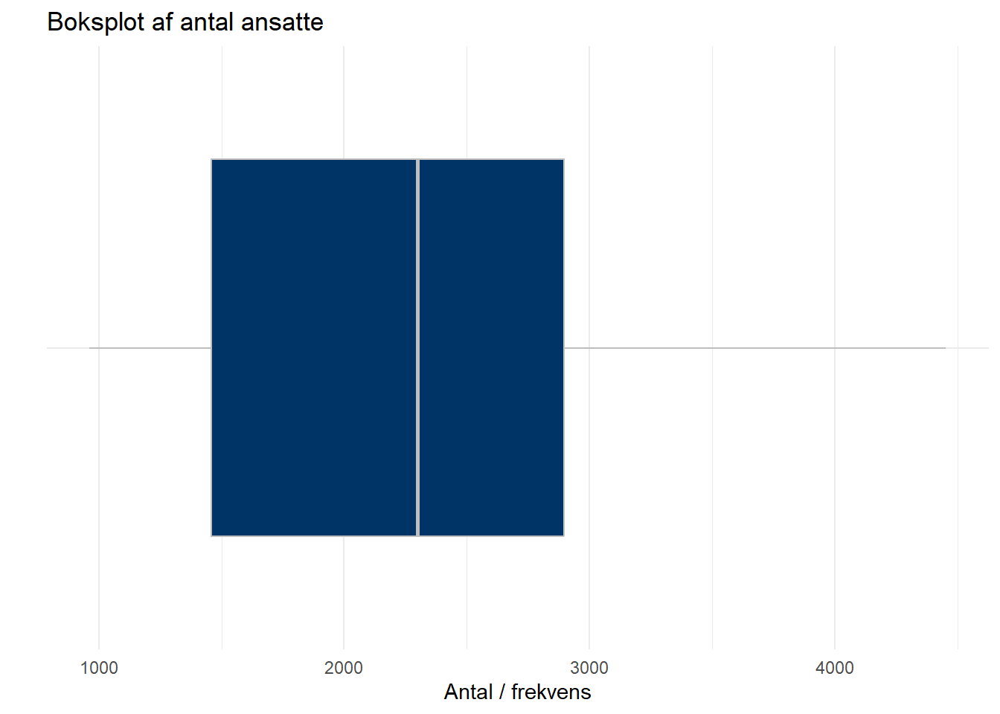

getwd()[1] "C:/Users/mmn/Dropbox/Ilisimatusarfik/Undervisningsdokumenter/E24/afleveringer"df <- readRDS("firma_data.rds")
names(df)[1] "navn" "industri" "ansatte" "omsaetning" "tilfredshed"Følgende er et forslag til besvarelse af den første ud af de seks obligatoriske afleveringer i faget. Brug det til at sammenligne med dine egne svar og diskutér med dine medstuderende.
Start med at åbne R-Studio ved at klikke på dit R-project. Opret dernæst et nyt script og gem det i samme mappe, som dit R-project. Du kan f.eks. kalde scriptet Aflevering_1.
Brug getwd() til at sikre dig, at du arbejder i den rigtige mappe på computeren
Indlæs datasættet firma_data.rds som et objekt i dit script
Brug funktionen names() til at se, hvilke variable datasættet indeholder
getwd()[1] "C:/Users/mmn/Dropbox/Ilisimatusarfik/Undervisningsdokumenter/E24/afleveringer"df <- readRDS("firma_data.rds")
names(df)[1] "navn" "industri" "ansatte" "omsaetning" "tilfredshed"Du er nu klar til at starte analyserne!
Variablen tilfredshed måler, hvor tilfredse firmaerne er med deres omsaetning på en likert skala:
| 1: Meget utilfreds | 2: Utilfreds | 3: Hverken tilfreds eller utilfreds | 4: Tilfreds | 5: Meget tilfreds |
Brug tabyl() fra library(janitor) til at lave en frekvenstabel med procenter. Gem tabellen i et objekt og brug library(writexl) til at eksportere den til excel.
library(janitor)
tabyl(df$tilfredshed) df$tilfredshed n percent
Meget utilfreds 300 0.3
Utilfreds 100 0.1
Neutral 200 0.2
Tilfreds 100 0.1
Meget tilfreds 300 0.3tabel_tilfredshed <- tabyl(df$tilfredshed)
library(writexl)
write_xlsx(list("Tabel over tilfredshed" = tabel_tilfredshed), "Tabel_tilfredshed.xlsx")Tabellen viser, at der er flest firmaer, der enten har svaret “Meget utilfreds” (n=300, 30%) eller “Meget tilfreds” (n=300, 30%). 200 har svaret “Neutral” og 100 har enten svaret “Tilfreds” eller “Utilfreds”. Der er altså ganske stor spredning i, hvor tilfredse firmaerne er med deres omsætning.
Fremgangsmåden er som følger:
Indlæs ggplot2 til library
Opret et ggplot, specificér datasættet (df), hvilken variabel der skal mappes på x-aksen (omsaetning), og hvilken type plot du vil have (geom_bar)
Tilføj aksetitler (og evt. titel til plottet) ved at tilføje funktionen labs() , hvor du specificerer titler til plot, x-akse og y-akse
Tilføj evt. et tema til det plot (her theme_minimal)
library(ggplot2)
ggplot(df) +
aes(x = factor(tilfredshed)) +
geom_bar(fill="#003366", na.rm = FALSE) +
labs(
title = "Tilfredshed med omsætning",
x = "Tilfredshed",
y = "Antal firmaer"
) +
theme_minimal()
ggsave()Først gemmer du plottet i et objekt, der hedder “barplot_tilfredshed”. Dernæst gemmer du plottet med ggsave(), hvor du fortæller funktionen, at den skal gemme objektet “barplot_tilfredshed” som en jpeg-fil (billede) på din computer som “Barplot_tilfredshed.jpeg”.
barplot_tilfredshed <- ggplot(df) +
aes(x = factor(tilfredshed)) +
geom_bar(fill="#003366", na.rm = FALSE) +
labs(
title = "Tilfredshed med omsætning",
x = "Tilfredshed",
y = "Antal firmaer"
) +
theme_minimal()ggsave("Barplot_tilfredshed.jpeg", plot = barplot_tilfredshed, width = 10, height = 8)Du er interesseret i at finde ud af, hvilken industri der er flest firmaer fra i datasættet.
Vi kan bruge funktionen Mode() fra library(DescTools) til at finde typetallet/modus for variablen industri. Funktionen fortæller os, at modus er “Finans” og at denne værdi optræder 400 gange i datasættet. Den printer desuden til sidst alle værdierne på variablen (levels).
library(DescTools)
(mode <- Mode(df$industri, na.rm = TRUE))[1] Finans
attr(,"freq")
[1] 400
Levels: Detail Finans Produktion Sundhed TeknologiDatasættet indeholder også information på firmaernes omsætning i variablen omsaetning. Du er interesseret i at vide noget om, hvad firmaerne i dit datasæt typisk tjener
Brug Mean() til at udregne den gennemsnitlige omsætning. Funktionen fortæller os, at den gennemsnitlige omsætning blandt firmaer er 397981.3 DKK.
Mean(df$omsaetning)[1] 397981.3Brug Median() til at udregne medianen for omsætning. Funktionen fortæller os, at medianen på variablen omsætning er en omsætning på 384974.1 DKK
Median(df$omsaetning)[1] 384974.1Når vi sammenligner gennemsnit og median ser vi, at gennemsnittet er højere end medianen. Dette tyder på, at der er nogle meget høje værdier, der trækker op i gennemsnittet. Fordi medianen kun afhænger af placeringen i rækkefølgen af omsætninger og ikke af værdiernes størrelse, påvirkes den ikke af ekstreme værdier. De to mål giver altså to forskellige bud på, hvad den typiske “midterste” værdi på variablen er.
For at få et endnu bedre overblik over fordelingen på variablen omsaetning er du interesseret i, hvor meget firmaernes omsætning ligger spredt omkring den gennemsnitlige omsætning.
Brug var() til et udregne variansen af variablen omsaetning:
var(df$omsaetning)[1] 53016059543Brug sd() til at udregne standardafvigelsen af variablen omsaetning:
sd(df$omsaetning)[1] 230252.2Varians og standardafvigelse er begge mål, der bruges til at beskrive, hvor meget værdierne i et datasæt spreder sig omkring gennemsnittet. Varians måler den gennemsnitlige kvadrerede afvigelse fra gennemsnittet. Med andre ord viser variansen, hvor langt hver værdi ligger fra gennemsnittet i gennemsnit, når man har kvadreret afvigelserne. Varians kan hjælpe os med at forstå, hvor “spredt” eller “varierende” dataene er, men målet er i kvadrerede enheder, hvilket kan gøre det svært at tolke direkte.
Standardafvigelse er kvadratroden af variansen. Den måler også spredningen af dataene, men angiver groft sagt den gennemsnitlige afvigelse fra gennemsnittet i de samme enheder som variablen (her DKK). Standardafvigelsen er derfor lettere at tolke, fordi den svarer til de oprindelige dataenheder og giver en mere intuitiv forståelse af variationen på variablen. En lav standardafvigelse betyder, at de fleste værdier ligger tæt på gennemsnittet, mens en høj standardafvigelse betyder, at værdierne er mere spredte.
Begge mål fortæller os, hvor meget variation der er i datasættet. De kan hjælpe os med at forstå, om data er ensartede og ligger tæt på gennemsnittet, eller om de varierer meget og spreder sig bredt. For eksempel kan en lav standardafvigelse indikere en mere forudsigelig eller stabil situation, mens en høj standardafvigelse kan tyde på større uforudsigelighed eller variation i dataene.
Endelig vil du gerne visualisere, hvor mange ansatte firmaerne i datasættet har
library(ggplot2)
ggplot(df) +
aes(x = "", y = ansatte) +
geom_boxplot(fill = "#003366", color = "grey") +
labs(
title = "Boksplot af antal ansatte",
x = "", # Tomt for at undgå en x-akse etiket
y = "Antal / frekvens"
) +
theme_minimal() +
coord_flip() # Her flippes boksplottet til horisontal
ggsave() og indsæt det herunderFørst gemmer jeg plottet i et objekt, der hedder “boksplot_ansatte”, dernæst gemmer jeg plottet med ggsave(), hvor jeg fortæller funktionen, at den skal gemme objektet “boksplot_ansatte” som en jpeg-fil (billede) på min computer som “Boksplot_antal_ansatte.jpeg”.
bokstplot_ansatte <- ggplot(df) +
aes(x = "", y = ansatte) +
geom_boxplot(fill = "#003366", color = "grey") +
labs(
title = "Boksplot af antal ansatte",
x = "", # Tomt for at undgå en x-akse etiket
y = "Antal / frekvens"
) +
theme_minimal()ggsave("Boksplot_antal_ansatte.jpeg", plot = bokstplot_ansatte, width = 10, height = 8)Et boksplot viser variablens fordeling ved hjælp af fraktiler:
Medianen (50%-fraktilen) er den midterste linje i boksen
Nedre kvartil (25%-fraktilen) og øvre kvartil (75%-fraktilen) udgør boksens kanter
Linjerne (Whiskers) strækker sig til fra minimumsværdien i bunden til maksimumværdien i toppen (ekslusiv outliers, dvs. inden for 1,5 gange interkvartilafstanden (IQR) fra Q1 og Q3).
Punkter udenfor linjerne (whiskers) er outliers, som er ekstreme værdier uden for dette interval.
Med andre ord viser boksplottet, at minimum er lidt under 1000 ansatte (det er nogle store firmaer!), første kvartil er lidt under 1500 (dvs. 25 % af firmaerne har omkring 1500 ansatte eller derunder), medianen (andet kvartil) er omkring 2300 ansatte (50 % af firmaerne har færre end 2300 ansatte, 50 % har flere), tredje kvartil er omkring 2900 ansatte (dvs. 75 % har 2900 eller færre, 25 % har flere ansatte) og maksimumværdien er lidt under 4500 ansatte. Vi kan også se, at der er lidt mere masse (dvs. firmaer) i den lave ende af fordelingen, da vores whishers er kortere i bunden og medianen er tættere på toppen af boksen end bunden.
Du kan få de præcise værdier med funktionen summary():
summary(df$ansatte) Min. 1st Qu. Median Mean 3rd Qu. Max.
962 1459 2299 2428 2897 4453